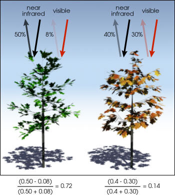

3 Week3 Remote sensing data
3.1 Summary
3.1.1 How Landsat obtain image data by using scanners?
The remote sensing data are collected by multispectral scanners, and they can detect different electromagnetic bands of radiation. These data are digitally processed and transmitted to ground station.
Two main ways of scanning and acquire image data:
| Whiskbroom | Pushbroom |
|---|---|
| Across-track scanning | Along-track scanning |
| Wide swath width | Narrow swath width |
| Simple optical system | Complex optical system |
| Shorter dwell time | Longer dwell time |
| Pixel distortion | No pixel distortion |
| Example: Landsat 7 | Example: Landsat 8 |
3.1.2 Why remote sensing data need to be processed?
This causes by some noises that are produced by sensors, the atmosphere, the terrain, and so on. For example, the atmosphere causes some noise in collecting data, like atmospheric pollutions, floating particles. These noises can be removed by using some correction measures.
3.1.3 Corrections of image data
3.1.3.1 Geometric correction
When collecting image data, there are some geometric errors. These images can be adjusted by using scale, orientation, and projection, which can match the spatial characteristics of earth surface.
Reasons for image distortions
View angle
Topography (like hills or not flat ground)
Wind (Using plane to collect data)
Rotation of the earth (Using satellite to collect data)
Solutions for geometric correction
identify ground control points
build models to provide geometric transformation coefficients
transform coordinates of pixels locations
- resample pixels values
Example for correct a old map in GIS
3.1.3.2 Atmospheric correction
Earth’s atmosphere has water vapor and ozone and other gases, and they will have effects on the measuring process. These effects can be removed when using remote sensing data, which is atmospheric correction.
Necessary and unnecessary atmospheric correction :
| Unnecessary | Necessary |
|---|---|
| Classification of a single image | Biophysical parameters needed (e.g. temperature, leaf area index, NDVI) |
| Independent classification of multi date imagery | Using spectral signatures through time and space |
| Composite images (combining images) | |
| Single dates or where training data extracted from all data |
Source: CASA0023 slides P26
Types of atmospheric correction:
Relative
normalize intensities of different bands within a single image and bands from many dates to one date
Absolute
use atmospheric conditions and illumination at the time of image collection, which to estimate the amount of scattering and absorption in images. Then, change digital brightness values into scaled surface reflectance. This can be done through atmospheric radiative transfer models.
3.1.3.3 Orthorectification correction
The topography of earth has variation, like hills, ridges, canyon and so on. Also, the satellite will have tilt when they collect data. Both of them have effects on the images. Basically, various topographical features and angles of satellite causes more inherent distortion in remote sensing data.
This is an example of orthorectification, and the left picture shows crooked road, but the right picture shows the real straight road after orthorectification.
3.1.3.4 Radiometric Calibration
Although many imagery data has already been converted to radiance by data provider, the process of radiometric calibration should be noticed. It refers to conversion of digital number(DN) to spectral radiance. DN is value in every pixel, and they are observed and measured by sensors. The spectral radiance is the amount of energy per unit area, like the amount of light from sensor in the field of view. There are many factors that affect radiance. For example, the intensity of illumination, the direction of illumination, orientation, position of target feature, and so on.
3.1.4 Mosaicking and Image enhancement
Mosaicking
It is similar to merge function in QGIS. For instance, some image data can be merged together based on the characteristics of each image, finally produces a new image.

Image enhancement
In order to better visualize characteristics on images, image can be enhanced by using many different methods, like stretch and spatial filtering. The following picture shows contrast is enhanced, and the visual interpretation can be easier.
3.2 Application
Explorations of radiometric calibration methods in UAS data
There are many methods for radiometric calibration. Generally, when you have some remote sensing data, image producers will have some recommended methods, but there are also some empirical methods. One research had compared five common methods by using unmanned aircraft systems data, which tries to explore the best performance of radiometric calibration. The five methods are one-point calibration (method A), one-point calibration plus sunshine sensor (method B), pre-calibration using the simplified empirical line calibration (method C) , one-point calibration plus sunshine sensor plus post-calibration(method D), and post-calibration using the simplified empirical line calibration (method E). The paper found there are no method that can have the best performance in every band Poncet et al. (2019a).
The errors provide more understanding of methods. In this case, the RMSE values are various in different bands, and they should be always noticed. For example, method B has lower RMSE in red-edge and NIR, but higher in green band. So we need to select the suitable method for radiometric calibration depending on our objectives Poncet et al. (2019b). Therefore, the analysis of imagery data can be more careful because the radiometric calibration method may have influence on the interpretation of UAS imagery.
Effects of Atmospheric Corrections on NDVI
Vegetation measurement is an essential application in remote sensing, and NDVI is Normalized Difference Vegetation Index (NDVI), which can quantify vegetation health. For example, when NDVI values are close to +1, the vegetation should be dense green, and when NDVI values are close to 0, there are no green. The NDVI formula is following:

One study explored common methods (QUAC, FLAASH, DOS, ACOLITE, 6S, and Sen2Cor) for atmospheric Corrections on NDVI by using Landsat 8, Sentinel-2, and UAV sensors data. In real raster data analysis, data probably are from different source, so the atmospheric correction, to some extent, make them more comparable. In this paper, FLAASH method has the best distinctiveness on NDVI between Landsat 8 and Sentinel-2 Moravec et al. (2021).
3.3 Reflection
Image enhancement
In the week 1, the false color composites can enhance the characteristics of image, and I think image enhancement also plays a similar role in visualizing image. In QGIS, there are many options for contrast enhancement, and I can set the min/max value for raster data.
In the enhancement image, I can more easily distinguish the boundary of grass and forest, so enhancement is really useful for real analysis in my study.
Mosaicking
This is similar to the merge function in QGIS, and merge is essential function. If my study area is not fully recorded by one raster image, I have to mosaic several raster image together in order to get my study area.
Principal Component Analysis
I think PCA would be a powerful tool in the future study. This contributes to reduce the dimensionality of data. In real remote sensing data analysis, I think the data probably have multiple dimensions, and the PCA would be functional to reduce them, which help us identify which components are more important among the data. For example, I can use PCA in exploring vegetation patterns, which tries to find what vegetation types dominate in study area.